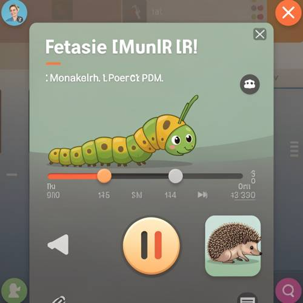
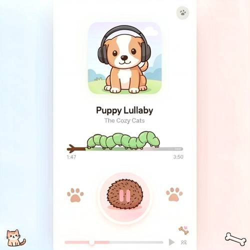
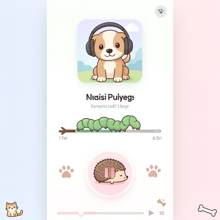
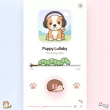
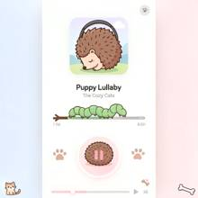
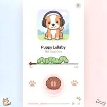
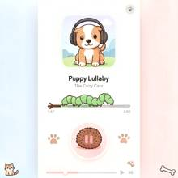

Compound — A pet-themed music player APP interface, its progress bar is a slow-cr
A pet-themed music player APP interface, its progress bar is a slow-crawling caterpillar, pause button is a curled up hedgehog.

Direct — one call, no iteration

Continuum — Kimi K3 + FLUX.2-klein-9B
Judge — Direct
FAILCompound - Feature Matching — The image displays a music player interface. There is a green and yellow cartoon caterpillar positioned directly above the progress slider, visually representing the progress of the track. This matches the first part of the requirement. However, the central pause button is a standard circular button with two vertical bars. To the right of the pause button, there is a separate square icon containing an illustration of a hedgehog. This hedgehog is not the pause button, and it is depicted from the side, not curled up. Therefore, the requirement for the pause button to be a curled-up hedgehog is not met.
Judge — Continuum
PASSCompound - Feature Matching — The image shows a music player interface where the progress bar features a green caterpillar crawling along it. The central button is illustrated as a brown, spiky, curled-up hedgehog, and it contains the pause symbol (two vertical bars).
What the agent did
Thinking
The user wants a pet-themed music player app interface. Key elements: progress bar is a slow-crawling caterpillar, pause button is a curled-up hedgehog. Let me generate with flux2-klein.
Step 1 — `generate_image`
{
"model": "flux2-klein",
"prompt": "A mobile app UI design for a pet-themed music player, displayed as a phone screen interface. Top shows album cover art of a cute puppy wearing headphones. Below it, a song title and artist name. The progress bar is a cute green caterpillar slowly crawling along a branch-shaped track line, its body segments forming the filled portion of the progress bar, with time stamps at each end. At the bottom, playback controls: previous and next buttons shaped like paw prints, and a large round pause button in the center decorated as a curled-up sleeping hedgehog with tiny spines, the pause symbol integrated on its body. Soft pastel color palette, rounded friendly UI elements, kawaii illustration style, small decorative icons of a cat and a fish bone in the corner, clean flat design."
}
Result img_0

Thinking
The image is pretty good. Issues: the song title text is garbled ("Niusisi Puiyegs", "Sunestctodf-Lloyc"). The hedgehog is lying flat rather than curled up in a ball — it shows a hedgehog with pause bars on its back, which actually works decently, but "curled up" would be better as a ball shape. The pause symbol is on it (two vertical pink bars), good. The prompt doesn't specify exact text, so garbled text is less critical, but I could try to fix the title to something readable. Let me try an edit to fix the title text and make the hedgehog curled up in a ball. Let me first mark this as best since it's decent, then edit.
Step 2 — `mark_best`
{
"image": "img_0",
"reason": "Pet-themed music player UI with caterpillar progress bar and hedgehog pause button \u2014 all key elements present; only garbled title text and hedgehog not fully curled."
}
Step 3 — `edit_image`
{
"image": "best",
"model": "flux2-klein",
"prompt": "Replace the garbled song title text with the clearly readable title \"Puppy Lullaby\" and the artist line below it with \"The Cozy Cats\", keeping the same font style and position."
}
Result img_1

Thinking
The title is now readable: "Puppy Lullaby" / "The Cozy Cats". The time stamps under the progress bar are still garbled ("17ʍl", "3.5n") — I could fix those to "1:45" and "3:50" or similar. Also the hedgehog is lying flat, not curled up. The pause bars are visible on its back. A curled-up hedgehog (ball shape) would match the prompt better. Let me try to fix the hedgehog to be curled into a ball. That's a harder edit; risk of ruining. Let me try one edit for the hedgehog.
Step 4 — `mark_best`
{
"image": "img_1",
"reason": "Title text now reads \"Puppy Lullaby / The Cozy Cats\"; all key elements intact."
}
Step 5 — `edit_image`
{
"image": "best",
"model": "flux2-klein",
"prompt": "Change the hedgehog on the center pause button so it is curled up into a tight round spiky ball, fast asleep, with the pink pause symbol (two vertical bars) shown on its round spiky body."
}
Result img_2

Thinking
The pause button hedgehog is now a curled-up spiky ball with pink pause bars — great. But the album cover changed from the puppy to a hedgehog sleeping on grass (headphones still there). The edit leaked into the album cover. The puppy album art was nicer and "Puppy Lullaby" matches a puppy. Also the pause bars lost... no, they are there. Options: keep img_2 (pause button is correct, but album art now shows a hedgehog instead of puppy — mismatched with title "Puppy Lullaby"), or revert to img_1 (flat hedgehog but puppy album). I could try to edit img_2's album cover back to the puppy.
Model
The curled-up hedgehog pause button is now perfect, but the edit leaked into the album cover — the puppy became a hedgehog, which clashes with the "Puppy Lullaby" title. Let me restore the puppy album art.
Step 6 — `edit_image`
{
"image": "img_2",
"model": "flux2-klein",
"prompt": "Replace the hedgehog in the top album cover with the cute brown and white puppy wearing black headphones, sitting on green grass, exactly as a puppy album artwork. Do not change anything else.",
"references": [
"img_1"
]
}
Result img_3

Thinking
Now the puppy album cover is restored and the curled-up hedgehog ball pause button is retained. Everything matches: - Pet-themed music player UI ✓ - Caterpillar progress bar crawling along a branch track ✓ - Curled-up hedgehog pause button with pause symbol ✓ - Readable title ✓ - Paw print prev/next buttons, cat and bone decorations ✓ Remaining minor flaw: garbled time stamps ("17ʍl", "3.5n"). I could try one fix: "1:45" and "3:50". Small text is hard for the model; the prompt didn't require specific text. Given the policy "good enough is a stop condition", but a quick attempt at fixing timestamps could improve. Risk of leaking. I'll try one edit; if it fails, keep img_3.
Step 7 — `mark_best`
{
"image": "img_3",
"reason": "Puppy album art restored; curled-up hedgehog pause button, caterpillar progress bar, readable title \u2014 all prompt elements correct."
}
Step 8 — `edit_image`
{
"image": "best",
"model": "flux2-klein",
"prompt": "Change the garbled time stamp text below the progress bar: the left one should read \"1:47\" and the right one should read \"3:50\", in the same small gray font. Do not change anything else."
}
Result img_4

Thinking
Time stamps now read "1:47" and "3:50". Everything else preserved. This is the final. Mark best.
Step 9 — `mark_best`
{
"image": "img_4",
"reason": "Final version: all elements correct \u2014 caterpillar progress bar, curled-up hedgehog pause button, puppy album art, and clean readable text including time stamps."
}
Model
Done! The final design is a charming pet-themed music player interface with everything you asked for: - **Progress bar**: a chubby green caterpillar slowly crawling along a twig-shaped track — its body length marks the elapsed time (1:47 of 3:50) - **Pause button**: a hedgehog curled up into a tight, sleepy spiky ball, with the pink pause symbol on its body - **Pet details throughout**: a puppy wearing headphones as the album art ("Puppy Lullaby" by The Cozy Cats), paw-print skip buttons, a paw settings icon, and a little cat and bone accents in the corners - Soft pastel palette with rounded, friendly kawaii-style UI elements